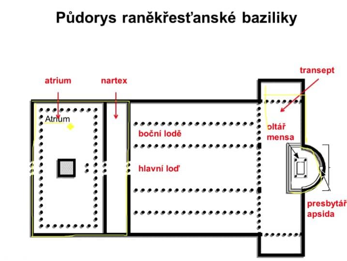
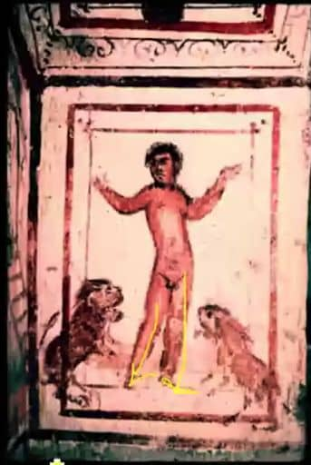
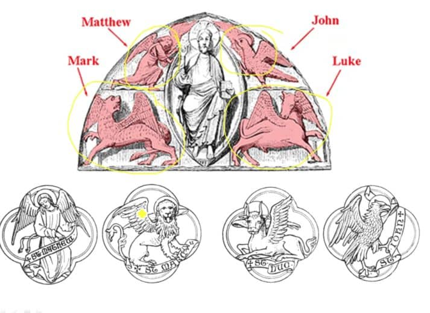
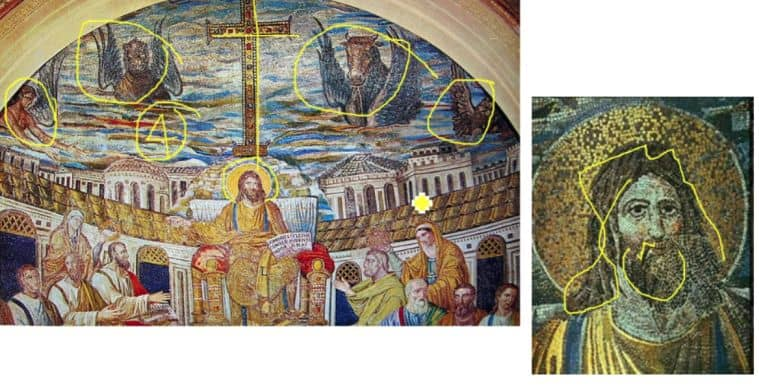

6. Raně křesťanské a byzantské umění
-
313 EDIKT MILÁNSKÝ - legalizace náboženství (Konstantin
Veliký)
- 476 ZÁNIK ZÁPADOŘÍMSKÉ ŘÍŠE
Kostel
- Motiv shromáždění církve
-
Orientace na východ
-
při armagedonu přijdou:
-
od východu vojsko
všemohoucího Boha vedené Kristem
-
od západu Satan (antikrist)
s démony a neposlušným bezbožným lidstvem
-
Důraz na interiér
- kvůli shromáždění
- převažují mozaiky
Bazilika
- Lichý počet lodí
-
Hlavní loď je vyšší
-
díky místu nahoře se používají okna (bazilikální)
- vzduch a světlo = hygienické
-
presbytář
- místo kde se nachází kněz
-
transept
- BAZILIKA SV. PETRA VE VATIKÁNU → PŘESTAVENA V RENESANCI

Centrální stavby
-
MARTYRIUM
- KOSTEL NAD HROBEM MUČEDNÍKA
-
BAPTISTERIUM
IKONOGRAFIE
-
MOTIV
- SYMBOL RYBY - zkratka “Ježíš Kristus, boží syn”
- POTÉ PRVNÍ PÍSMENA
-
ALFA A OMEGA - první a poslední písmena řecké
abecedy
-
ROZTÁHNUTÉ RUCE - Motiv modlitby → těmto postavám
říkáme ORANTI
-
Kristus zobrazovaný jako antický filosof
-
mladý, bezvousý, svitek v ruce, zdvižená
pravice - motiv projevu
-
FORMA
- KONTRAPOST
- mužské akty již nejsou problémem

-
PO EDIKTU
- ZLOM V 5. STOLETÍ
- OBJEVUJE SE KŘÍŽ
-
4 EVANGELISTÉ
- MATOUŠ = ČLOVĚK (s křídly → anděl)
- MAREK = LEV
- LUKÁŠ = BÝK
- JAN = OREL

-
- NIMBUS (SVATOZÁŘ)
-
POČÁTKY MADONY BOHORODIČKY, KULT PANNY MARIE
-
JEŽÍŠ MÁ VOUSY A DLOUHÉ VLASY → MOTIV VLÁDCE
SVĚTA
-
také je zobrazován jako zmenšený dospělý
člověk, ne jako dítě

-
-
NOVÝ VZTAH K TĚLU
- zájem o anatomii
-
řeky zajímá celé tělo, římany jen hlava
(protože duše dle nich přežívá v hlavě)
-
Sv. Augustin → tělo je za trest, důležitá je
duše, motiv zdeformovaných a
zdůrazněných očí (oči jsou cesta do
duše, velké oči → velká duše)
- Významné centrum → RAVENNA
- Hagia Sofia, Istanbul
- IKONY = staré řecké obrazy
OBRÁZKY
-
BAZILIKA
-
CHRÁM SVATÉHO PETRA, POPSÁNÍ HLAVNÍ A VEDLEJŠÍ LODĚ,
TRANSEPT, ATRIUM, PŘILEHLÉ BAPTISTERIA
-
DOBRÝ PASTÝŘ
-
KRISTUS BEZVOUSÝ MLADÍK, BERÁNEK NA ZÁDECH, MOTIV
PASTÝŘE
- KONTRAPOST
-
KRISTUS
-
NIMBUS, VELKÉ OČI, ZLATO V POZADÍ → NEKORODUJE
(MOTIV VĚČNOSTI), MOZAIKA (POSTAVENÍ Z KAMÍNKŮ,
POLODRAHOKAMU ČI SKLA)
-
SARKOFÁG
- Sarkofág sloužil na uchování mrtvých (“rakev”)
-
KRISTUS SE SVITKEM V RUCE, ZDVIŽENÁ PRAVICE, MOTIV
PRVOTNÍHO PÁDU (ADAM EVA), KONTRAPOSTY, DANIEL V
JÁMĚ LVOVÉ
-
HAGIA SOFIA
- [:HÁJA SOFIA:], Istanbul (Konstantinopolis)
- KOPULE → MOTIV IMPÉRIA
- PILÍŘE NESOUCÍ VÁHU KOPULE
Audio